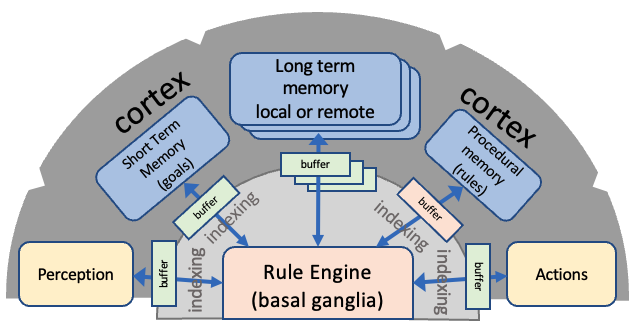
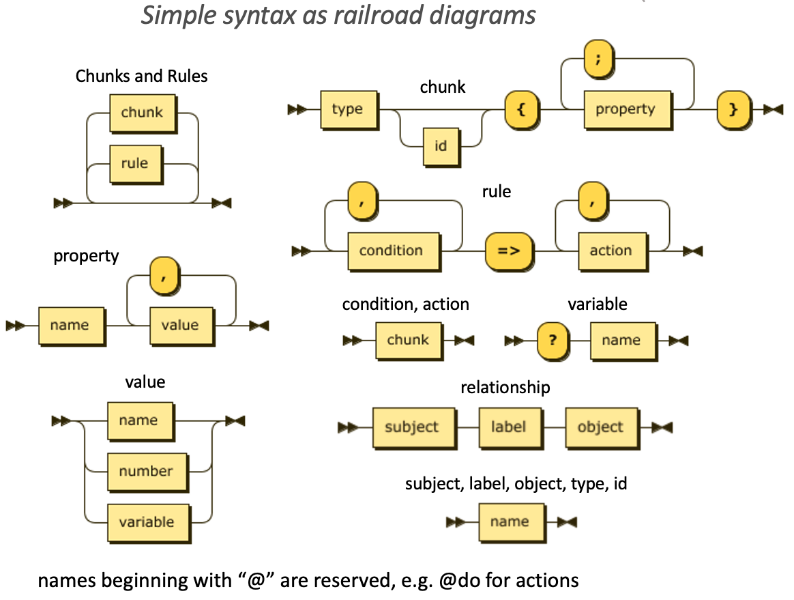

This page demonstrates how a task can initiate several subtasks and wait for them all to complete.
Press Start to initiate/restart the demo. More details are given in the explanation at the end of this page.
Execute rules:
Log:
Facts graph:
Rules graph:
Chunks & Rules is a framework developed by the W3C Cognitive AI Community Group for implementing cognitive agents in terms of facts and rules. The approach is inspired by ACT-R, a popular cognitive architecture, which has been widely used in Cognitive Science with considerable success in modelling human behaviour and neural activity, whether doing mental arithmetic or driving a car.

The framework consists of multiple cognitive modules each of which has a buffer that can hold just one chunk, which is a set of related properties. The rule engine determines which rules match the buffers, stochastically selects one of these rules and executes its actions. Rules are given as a conjunctive list of conditions and a list of actions. Rule conditions and actions are modelled as chunks, where each chunk specifies which module it applies to. Actions are asynchronous with a few exceptions, enabling real-time control without interrupting cognition. There is a large suite of buit-in actions and an API for applications to define and register custom actions, as well as to insert chunks into the prioritised queue for each module's buffer.

Each chunk has a type, a unique identifier and a set of additional properties. Property values are names and numbers, or a sequence thereof. There is a syntactic shorthand for relationships which expand into a chunks where the @subject and @object properties define the subject and object for the relationship as the id's for other chunks. The relationship label is mapped to the chunk type. Rules can include variables for chunk property values, as distinguished by a "?" immediately preceding the variable name. Actions can trigger follow on behaviour when the action completes by pushing a chunk to a prioritised queue for a module buffer, for instance, after moving a robot arm to a designated position. Performance is fast because a) conditions are evaluated over a few buffers rather than large databases, and b) actions are asynchronous, enabling cognition to continue whilst actions take place.
Chunks & Rules can be used for cognitive agents with event driven concurrent threads of behaviour. Applications can use the chunk library API to mimic human perception with code that senses the environment, listens for messages from other agents, maintains chunk graphs as live models of the environment, and queues chunks to module buffers as events to trigger the corresponding behaviours. Agents can message each other by name with @message or by topic with @topic, where agents subscribe to the topics of interest using @subscribe. Each message is a chunk. The underlying protocol needs to support reliable, timely, in-sequence message delivery, e.g. zenoh, MQTT, DDS, WebTRC and Web Sockets.
Actions can either operate on module chunk graphs or actuate devices. Applications can register custom actions to mimic the brain's cortico-cerebellar circuit, where real-time control is dynamically adapted using perception of sensory data, analogous to how you reach for a coffee cup, fine tuning the motion of your hand out of the corner of your eyes as your hand gets closer to the cup. See the bottling demo for an example of a cognitive agent that implements real-time control over conveyor belts, a robot arm and other manufacturing machines.
Tasks are an abstraction for named threads of behaviour. Rules can initiate tasks with @do task and signal success or failure with @do done and @do fail respectively, akin to JavaScript's resolve and reject. You can use @on to delegate a task to a named agent. This page shows how @all can be used to signal when all of the associated tasks have successfully completed. @any can be used to signal when any of the tasks have succeeded, and @failed to signal when any of the tasks have failed. The demo task uses a custom operation @do timer that takes a random time in seconds in the range set by the min and max properties. A timer can be used to recover when tasks take too long to complete.
Swarms can be dynamic with agents entering and leaving the swarm. A simple approach to decentralised naming is for agents to name themselves with a large random integer. Agents can signal entering and leaving by publishing a message on an associated topic. For this purpose, it makes sense to include @from for the sender's name as part of the message chunk, where other properties can be used to describe the sender's capabilities. Messages can also be used to support consensus building, auctions, negotiations and distributed storage, as well as assigning agents to given roles.
Future work will look at machine learning, e.g. task-based reinforcement learning across multiple agents. By keeping track of which rules were used in a given task, the agent can update each rule's strength based upon it's utility in attaining goals. The stronger the rule, the more likely it will be selected for execution. Ineffective rules will be forgotten. Neural networks seem like a good choice for modelling domain knowledge as a basis for guiding learning, including the process of learning to learn, so that agents can learn from just a few examples. A further question is whether neural networks are a better basis for implementing rules, rather than symbolically as with chunks & rules. A related question is how to implement fuzzy rules inspired by fuzzy logic.
Dave Raggett <dsr@w3.org>